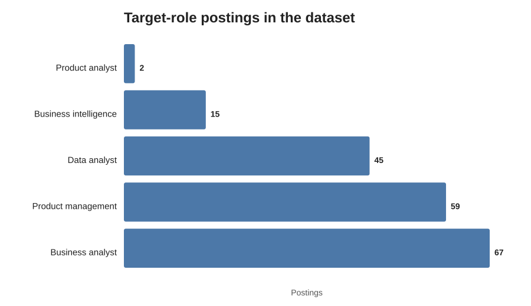
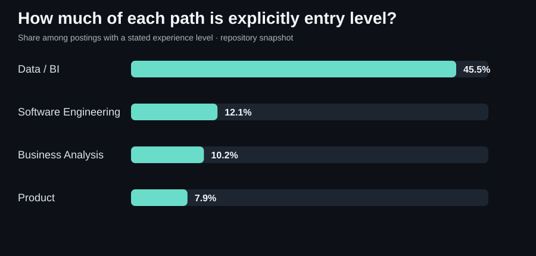

Python · SQL · Relational data · Visualization
Job Market & Skills Analysis
What a focused sample of analyst, product and BI postings says about roles, experience and skills.

What do analyst, product and BI postings actually ask for?
I wanted one dataset to answer several practical questions at once: which role families appear most often, how “entry level” differs by title, which tools keep showing up, and what salary data can—and cannot—support.


The first decision was classification, not visualization.
A conservative title rule produced 67 Business Analyst, 59 Product Management, 45 Data Analyst, 15 Business Intelligence and 2 Product Analyst postings. That last group is too small to carry a general conclusion, so I keep it visible without pretending it is robust.
02 / Data model
The source was relational, so I treated it like relational data.
The posting table is the spine. Skill and industry information live in bridge/lookup tables, while salary information has its own usable subset.
“Entry level” is not distributed evenly across these role families.
Only 14.9% of the 188 target postings are labeled entry level. Data Analyst stands out: 19 of 45 postings (42.2%). Business Analyst is 7.5%; Product Management is 6.8%. Missing experience labels still matter, so the chart describes this sample rather than “the market.”


SQL shows up most often, but the role split is more useful than the total.
Across the 188 target postings, literal description matches find SQL in 55 postings (29.3%), Excel in 43 (22.9%), Python in 23 (12.2%), Tableau in 22 (11.7%) and Power BI in 20 (10.6%). SQL appears in 66.7% of BI postings, 37.8% of Data Analyst postings and 18.6% of Product Management postings.
The salary medians are useful context, not a clean ranking.
The groups have different seniority mixes and very different sample sizes. I use salary to describe the postings with usable normalized values, not to claim one title universally pays more.
What I learned from the analysis
The title alone hides a lot.

Product build · Flask · JavaScript · REST APIs
Bookmatch
Book discovery beyond a title search: preferences, readable matches and a place to save the next read.
Explore case study →